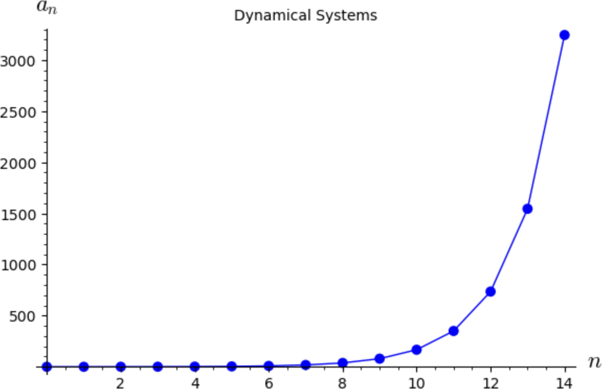

Section 8.2 Long-Term Behavior and Equilibria
(8.1.1) gives us an easy–to–use formula for finding the exact value of \(a_n\text{.}\) However we are usually more interested in describing the long–term behavior of the system than in finding exact values at points in time. That is, we want to know what happens to \(a_n\) for large values of \(n\text{.}\)
Example 8.2.1. Long-term Behavior.
Let's graphically examine the long-term behavior of a linear dynamical system \(a_{n+1} = ba_n\) for various values of \(b\text{.}\) For simplicity, suppose that \(a_0 = 0.1\text{.}\)

Up above, we can change the value of \(b\text{,}\) re-execute all these cells and get a different set of points and a different graph. However, this can get tedious fast, especially if we want to investigate behavior of a lot of different values for \(b\text{.}\) We can make this process interactive by use of sliders.
Move the slider on the scroll bar for \(b\) left and right and notice how the behavior of the system changes, especially when \(b\) passes \(-1, 0,\) and +1. Our observations are summarized in the table below. As we can see, the long–term behavior of the system is dramatically affected by the value of \(b\text{.}\)
Now consider a savings account that pays 5% interest compounded yearly. We saw in Section 8.1 that a model for an account with an interest rate \(r\) is
In this case, we have \(r = 0.05\text{,}\) so our model is
Suppose now that we want to withdraw $2,000 at the end of each year to supplement our income. We want to know how much money we need to deposit now so that we never run out of money.
To answer this question, we will analyze a slightly more general problem: What happens to the amount in the account in terms of the initial deposit? First we will construct our model. The amount in the account grows at 5% compounded yearly but we are withdrawing $2,000 each year. A dynamic model that describes this scenario is
As before, \(a_n\) is the amount in the account at the end of year \(n\text{.}\) We are also assuming that there is no penalty for withdrawing money each year and that we withdraw the money after the interest from the previous year has been added. This system is an example of an affine dynamical system.
Definition 8.2.2. Affine Discrete Dynamical System.
An affine discrete dynamical system is a sequence of numbers \(\{a_n\mid n = 0, 1, 2, \dots\}\) described by a relation of the form
where \(b\ne 0\text{.}\)
Central to the analysis of the long–term behavior of any dynamical system are equilibrium values (also called fixed points).
Definition 8.2.3. Equilibrium Value.
A number \(a\) is called an equilibrium value for the dynamical system \(a_{n+1} = f(a_n)\) if \(a_n = a\) for all \(n\) whenever \(a_0 = a\text{.}\)
To find equilibrium values, note that if \(a\) is an equilibrium value, we must have
So finding equilibrium values simply requires us to solve the equation \(f(a) = a\text{.}\) For an affine system, we have
In this example, \(b=1.05\) and \(m=-2000\text{,}\) so the equilibrium value is \(a=\frac{-2000}{1-1.05} = 40,000\text{.}\) Thus if we start with $40,000 in the account and withdraw $2,000 at the end of each year, we will always have the same amount in the account at the end of each year.
Example 8.2.4. Savings Account.
We will take a graphical approach to analyze what happens for initial values other than the equilibrium value of $40,000.
Type in -2000 for \(m\) and then move the slider for \(a_0\) left and right and observe how the long–term behavior of the system changes. Specifically, note that for \(a_0\) less than $40,000, the amount in the account eventually decreases to 0 and for \(a_0\) greater than $40,000, the amount grows without bound.
In Example 8.2.4 we saw that the long–term behavior of the system changed quite dramatically with a small change in \(a_0\text{.}\) In situations like this we say that the system is sensitive to the initial condition.
We note that if \(a_0\ne 40,000\text{,}\) the system either approaches 0 or increases without bound. This is an example of an unstable or repelling equilibrium.
Definition 8.2.5. Equilibrium Value.
An equilibrium value \(a\) is unstable or repelling if there is a number \(\varepsilon\) such that
The equilibrium \(a\) is stable or attracting if there is a number \(\varepsilon\) such that
In less technical terms, an equilibrium value \(a\) is repelling if the system starts near it, but does not approach it. This is exactly what we saw in Example 8.2.4. The equilibrium is attracting if the system starts near \(a\) and approaches it.
Example 8.2.6. Antibiotic in the Bloodstream.
An infant is given an antibiotic to treat an ear infection. When taking an antibiotic, it is important to keep the amount of the drug in the bloodstream fairly constant. If the amount gets too low, the bacteria can begin to regrow. If the amount gets too high, it could cause other complications.
Suppose the half-life of the drug is one day (meaning that half the drug remains in the blood after each one-day period) and a dosage of 0.1 mg is given. We want to examine what happens to the amount of the drug in the blood stream in the long run.
A simple affine model for the system is
where \(a_n\) is the amount of the drug in the blood at the end of day \(n\text{.}\) Since the problem did not specify an initial dosage, we need to experiment with different values.
Note that when \(a_0 = 0.2\text{,}\) the system remains at 0.2, meaning that 0.2 is an equilibrium value. Also note that no matter what the value of \(a_0\text{,}\) the system appears to always approach 0.2. This shows that 0.2 is a stable equilibrium.
Example 8.2.7. Generalized Savings Account.
Suppose we want to withdraw $5000 every other year (starting in year 2) instead of every year. This makes our model
This system is neither linear nor affine. We will take a strictly graphical approach to analyze the behavior in terms of the initial deposit.
Exercises Exercises
1.
Your grandparents have their life savings of $750,000 in a savings account that pays 6.7% interest compounded yearly. They want to spend all of it before they die. If they plan to live 15 more years, how much should they withdraw at the end of each year to accomplish their goal?
2.
Kayla receives a $6,000 high school graduation present which she puts in a savings account paying 4.15% annual interest, compounded monthly. She plans to work for two years before starting college, put her earnings in the account, and then live off the money in the account during college. Here are the details of her plan:
She will deposit the same amount into the account at the end of each month for the two years she works (starting in month 1).
In month 25 she will stop making deposits and start withdrawing $1,000 each month for her first year in college.
During her second year she will withdraw $1,250 each month. During her third and fourth years she will withdraw $1,500 and $1,750 each month, respectively.
Figure out how much she must deposit each month for the first two years so she has $0 left in the account at the end of her fourth year of college. Approximately how much total interest does she earn over the six years?
HintRecall that the formula for compound interest is given by
where \(P\) is the initial amount in the account, \(r\) is the annual interest rate in decimal form, \(n\) is the number of times the interest is compounded per year, and \(t\) is the number of years.
As a discrete dynamical system, you can look at the formula
3.
Suppose the amount of a drug in a patient's blood stream decreases at the rate of 50% per hour and that an injection is given at the end of each hour which increases the amount of drug in the blood stream by 0.2 units.
(a)
Formulate a model of the amount of drug in the blood stream at the end of each hour.
(b)
Find all equilibrium value(s) of your model.
(c)
Graphically, classify each equilibrium value as attracting or repelling.
(d)
Suppose we give the injection every 3 hours. Describe what happens to the long-term level of the drug in the blood stream.
4.
Suppose two countries are engaged in an arms race. Further suppose that the two countries have economies of similar strength and they have similar levels of distrust of each other. A simple model for \(T_n\text{,}\) the total amount of money spent by the two nations, is given by the affine system
where \(r\) is a positive constant that measures the restraint of growth due to the strength (or weakness) of the economies of the countries, \(d\) is a positive constant that measures the level of distrust between the countries, and \(c\) is a constant. If \(T_n\) eventually grows too large, then the countries will not be able to support the arms race and they must either negotiate an end or war breaks out. If \(T_n\) approaches a constant level, then they have a “stable” arms race. If \(T_n\) eventually decreases to 0, or \(\lim\limits_{n\to\infty} T_n = -\infty\text{,}\) then the race ends.
(a)
Suppose \(r = 0.3\text{,}\) \(d = 1\text{,}\) and \(c = -10\text{.}\) Calculate \(T_n\) for \(0 \le n \le 15\text{.}\) Graph these values. Set up a scroll bar to vary the value of \(T_0\) between 0 and 100. For what values of \(T_0\) does the race end?
(b)
Now suppose \(r = 0.3\text{,}\) \(d = 1\text{,}\) and \(c = 10\text{.}\) For what values of \(T_0\) does the race end?
(c)
Now suppose \(r = 0.3\text{,}\) \(d = 0.1\text{,}\) and \(c = 10\text{.}\) What happens to the arms race now?